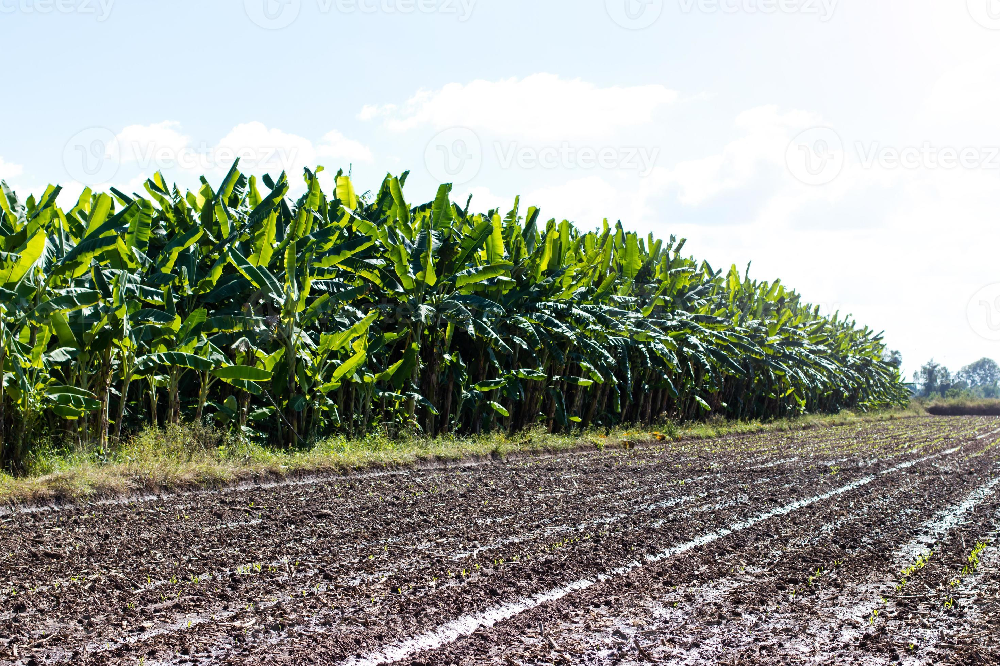

Platano

La producción de plátano es una actividad agrícola de gran importancia a nivel global, no solo por su relevancia económica para los países productores sino también por su papel crucial en la seguridad alimentaria de millones de personas. El éxito de la producción de plátano depende en gran medida de condiciones específicas de clima, suelo y disponibilidad de agua, factores que varían significativamente de una región a otra. En términos de clima, los plátanos prosperan en ambientes cálidos y húmedos, donde las temperaturas se mantienen consistentemente entre 20-30 °C durante todo el año. Estas condiciones climáticas son esenciales para asegurar un crecimiento óptimo del plátano. Además, la humedad relativa debería ser alta, idealmente entre el 75% y el 90%. Estas condiciones climáticas se encuentran predominantemente en las regiones tropicales y subtropicales del mundo. El suelo, por su parte, juega un papel crucial en la producción de plátano. Los suelos ideales para su cultivo son aquellos que tienen buen drenaje, son ricos en materia orgánica y mantienen una estructura suelta que permite una fácil penetración de las raíces. Además, el pH del suelo debe estar en el rango de 5.5 a 7.0 para promover un crecimiento saludable de las plantas. La disponibilidad de agua es otro factor determinante para la producción de plátano. Esta planta es bastante exigente en términos de riego, necesitando un suministro constante de agua para su desarrollo. Sin embargo, el exceso de agua, especialmente en suelos con drenaje deficiente, puede ser perjudicial y conducir a la pudrición de las raíces. Considerando estos factores, algunas de las regiones del mundo que cuentan con las mejores condiciones para la producción de plátano incluyen partes de América Latina, el Sudeste Asiático y África. En América Latina, países como Ecuador, Colombia, Costa Rica y Guatemala son reconocidos por sus vastas plantaciones de plátano, las cuales se benefician de climas ideales, suelos fértiles y una amplia disponibilidad de recursos hídricos. Ecuador, en particular, es uno de los mayores exportadores de plátano a nivel mundial, lo cual subraya la excelencia de sus condiciones agrícolas para este cultivo. En el Sudeste Asiático, Filipinas e Indonesia destacan por su producción de plátano, gracias a sus climas tropicales que ofrecen temperaturas y humedad óptimas durante todo el año. África, con países como Costa de Marfil y Camerún, también posee regiones con condiciones climáticas y de suelo favorables para el cultivo de plátano, aunque enfrenta mayores desafíos en términos de gestión del agua y acceso a tecnologías avanzadas para la agricultura. La producción de plátano, por lo tanto, es un claro ejemplo de cómo la interacción entre el clima, el suelo y la disponibilidad de agua define las capacidades productivas de una región. Al entender y aprovechar estas condiciones, los países productores pueden mejorar sustancialmente sus rendimientos y contribuir significativamente a la oferta global de este alimento esencial.
¿Cuál es el clima más adecuado para producir plátano?
Los plátanos requieren un clima tropical o subtropical, con temperaturas que se mantengan consistentemente entre 20-30 °C. Estas condiciones de temperatura son cruciales para evitar el estrés de la planta que podría resultar de la exposición a temperaturas más frías. De hecho, las temperaturas por debajo de los 14 °C pueden ralentizar significativamente el crecimiento del plátano, mientras que las heladas son prácticamente una sentencia de muerte para estos cultivos sensibles. Además de las temperaturas cálidas, la producción de plátano demanda altos niveles de humedad, idealmente entre el 75-90%. Esta alta humedad ayuda a mantener el nivel de agua necesario en las plantas, facilitando así procesos vitales como la fotosíntesis y la transpiración. Sin embargo, es igualmente importante que el área de cultivo cuente con un buen sistema de drenaje para evitar el encharcamiento del suelo, que podría provocar enfermedades en las raíces y afectar negativamente el desarrollo de la planta. La precipitación es otro factor climático clave para la producción de plátano. Se requiere de una distribución uniforme de lluvia a lo largo del año, con un total anual que oscile entre 1,000 y 2,000 milímetros. Un suministro constante de agua es vital para los plátanos, pero al igual que con la humedad, es fundamental evitar el exceso de agua para prevenir enfermedades y asegurar que el suelo tenga suficiente capacidad para drenar adecuadamente.
¿Qué tipo de suelo requiere el cultivo del plátano?
El plátano prospera en suelos que presentan un buen drenaje, una característica esencial para prevenir el encharcamiento y las enfermedades relacionadas con el exceso de humedad. Un drenaje eficaz asegura que el agua de riego o lluvia pueda ser absorbida por las raíces de manera efectiva, sin acumularse y provocar la pudrición de estas. Para lograr este equilibrio, los suelos arenosos loam son ideales, ya que ofrecen una estructura que retiene la humedad necesaria, pero permite un drenaje excedente adecuado. La riqueza en materia orgánica es otro factor determinante para el suelo en la producción de plátano. Un contenido alto en materia orgánica no solo mejora la estructura del suelo y su capacidad de retención de agua, sino que también suministra nutrientes esenciales para el crecimiento de las plantas. Este tipo de suelo favorece la actividad microbiana, la cual es crucial para la descomposición de la materia orgánica y la liberación de nutrientes en formas accesibles para las plantas. El pH del suelo también juega un papel significativo en la producción de plátano. Los suelos con un pH que oscila entre 5.5 y 7.0 son los más adecuados, ya que este rango de acidez permite la óptima disponibilidad de nutrientes esenciales. Un pH fuera de este rango puede afectar la capacidad de las plantas para absorber nutrientes, lo cual se traduce en un crecimiento deficiente y una reducción en la calidad y cantidad de la producción. Por último, la profundidad del suelo es un aspecto que considerar, ya que los plátanos desarrollan un sistema radicular extenso. Un suelo profundo permite que las raíces se expandan adecuadamente, lo cual es vital para la estabilidad de las plantas y la absorción eficiente de agua y nutrientes. Suelos poco profundos o con capas duras subyacentes pueden limitar el desarrollo radicular, afectando adversamente el crecimiento y la productividad de la planta.
¿Cuánta agua requiere el cultivo del plátano?
El plátano necesita un suministro constante y abundante de agua debido a su gran tamaño y a su rápido crecimiento. El requerimiento exacto de agua puede variar dependiendo de factores como el clima, el tipo de suelo y la etapa de crecimiento de la planta, pero en general, se estima que necesita entre 1,200 y 2,200 mm de agua al año distribuidos uniformemente. Esto equivale aproximadamente a 120 a 220 litros de agua por metro cuadrado anualmente. En condiciones de alta evaporación y transpiración, estas necesidades pueden ser incluso mayores. Durante la etapa de crecimiento inicial, la planta de plátano requiere menos agua comparativamente; sin embargo, una vez que la planta comienza a desarrollar sus hojas y, especialmente, durante la formación del racimo de frutas, las necesidades hídricas aumentan significativamente. Es crucial que, en esta fase, la planta reciba suficiente agua para evitar el estrés hídrico, el cual puede tener un impacto negativo en el desarrollo del fruto, reduciendo tanto su tamaño como su calidad. Además, la eficiencia en el uso del agua es de suma importancia en la producción de plátano. Sistemas de riego por goteo y microaspersión son altamente recomendados, ya que minimizan la pérdida de agua por evaporación y aseguran que el agua se aplique directamente donde la planta más lo necesita: en la zona radicular. Estos métodos de riego no solo son más sostenibles, sino que también pueden ayudar a prevenir enfermedades relacionadas con el exceso de humedad en las hojas y frutos. Es vital para los productores monitorear las condiciones del suelo y el clima de manera regular para ajustar las prácticas de riego acordemente. Un manejo cuidadoso del agua no solo es una cuestión de eficiencia productiva; también es una responsabilidad ambiental. La adopción de tecnologías de riego eficientes, junto con prácticas de conservación del agua, puede hacer una gran diferencia en la sostenibilidad de la producción de plátano.
¿Como sembrar una semilla de Platano?
Sembrar una semilla de plátano es un proceso interesante, aunque generalmente se cultivan a partir de "hijos" o "chupones" en lugar de semillas. Sin embargo, si deseas experimentar con semillas, aquí tienes una guía:
Pasos para sembrar una semilla de plátano
Obtén las semillas:
Busca plátanos que tengan semillas visibles (como los plátanos silvestres). Las semillas de los plátanos comerciales son generalmente estériles.
Preparación de las semillas:
Lava las semillas para eliminar cualquier pulpa o residuo. Déjalas secar durante unas horas.
Germinación:
Coloca las semillas en un recipiente con agua tibia y déjalas en remojo por 24 horas. Luego, siembra las semillas en un sustrato ligero, como mezcla de tierra y arena, a una profundidad de aproximadamente 2 cm.
Condiciones de cultivo:
Mantén el sustrato húmedo, pero no empapado. Coloca el recipiente en un lugar cálido y con luz indirecta.
Cuidado:
Las semillas pueden tardar varias semanas en germinar. Ten paciencia y asegúrate de mantener la humedad. Una vez que las plántulas tengan al menos dos hojas, puedes trasplantarlas a una maceta más grande.
Transplante:
Cuando las plántulas crezcan y estén suficientemente fuertes, trasplántalas a un lugar donde puedan recibir luz solar directa y tengan suficiente espacio para crecer.
bibliografia:
https://blogagricultura.com/clima-suelo-platano/